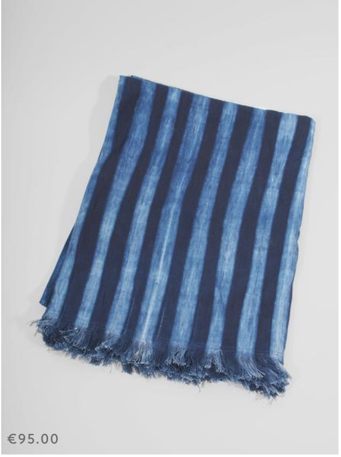

MENU
SHOP
 NORTHERNISM
EUR * CART (0)
Indigo
NORTHERNISM
EUR * CART (0)
Indigo
POSTED ON: 30.03.16 * POSTED BY: MARLIES NEUGEBAUER
A little late to the indigo party but welcoming my order of natural indigo dyed tote bags and table cloths from Tensira a few weeks ago made me want to share a few facts about this deep midnight blue, often referred to as blue gold...

Striped Indigo Table Throw
(dark)